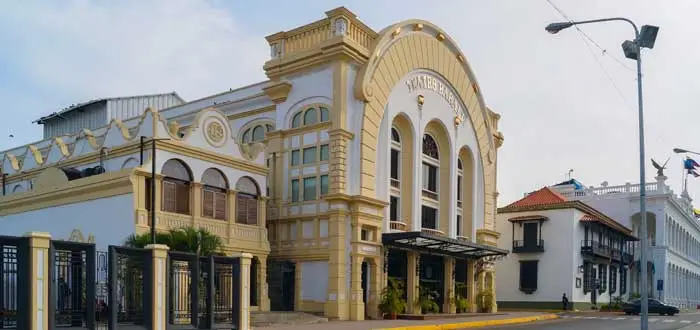
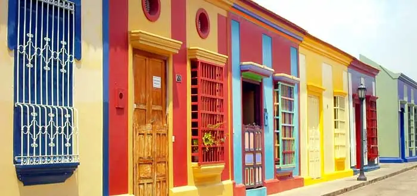
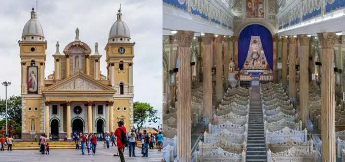
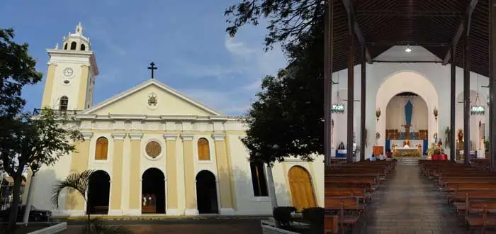
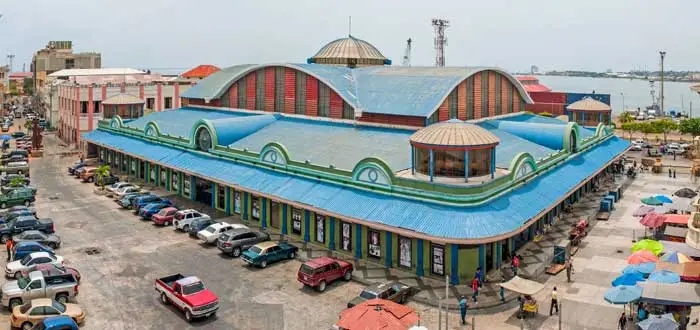

We hope you get to learn more of this beautiful city, and experience all there is to see in your visit.
Culture
Culture in Maracaibo is one of the most vibrant and diverse in the world. It is recognized in every state and city in Venezuela, and is very influential with its gaitas, desserts, style, living, and customs. Most major houses of advertising in Venezuela acknowledge how opposite the culture of Maracaibo is from that of Caracas (the capital). Studies of both prove, for example, that Caracas' leading soft drink brand is Coke, while in Maracaibo it is Pepsi. This has made many brands create special localised advertising of their products (including several Pepsi commercials spoken by local celebrities).
The city is also home to an array of immigrants from but not limited to: Spain, Italy, Germany, and Latin American countries. Origin for the unique blend of language, music, art, and cuisine.
Origin of the City's Name
The name of the city Maracaibo is said to come from the famous and brave cacique Mara. He was a young native who bravely resisted the Spaniards and died fighting them.
According to legend, when Mara fell, the Coquivacoa shouted “Mara kayo” or “Mara fell.” Thus, originating the name of the city.
According to some other historians, the first name of this land in the local language was “Maara-iwo,” which means “Place where serpents abound.”
Maracaibo City: Known for the bridge connecting the lake shores
In the 1950s, during the government of General Marcos Perez Jimenez, it was planned to construct a bridge connecting the two shores of the lake.
The general and his government decided that this “city of independent thought” must be more “connected” to the rest of the nation.
Multiple bridge projects for the area of Lake Maracaibo narrows near the city were in the works, the one that would become what we see today was initially named the "Ambrosio Ehinger" bridge.
The building of El Puente sobre el Lago de Maracaibo “General Rafael Urdaneta,” was opened to public traffic in 1962, connecting the city to the rest of Venezuela.
Today it is the second largest bridge in Latin America, allowing for the daily transit for thousands upon thousands of people.
Places to make unforgettable memories

Baralt TheaterMaracaibo Bridge “General Rafael Urdaneta”

El Saladillo Neighboorhood

Basilica Nuestra Señora de la Chiquinquira

Maracaibo Cathedral

Lía Bermúdez Art Center